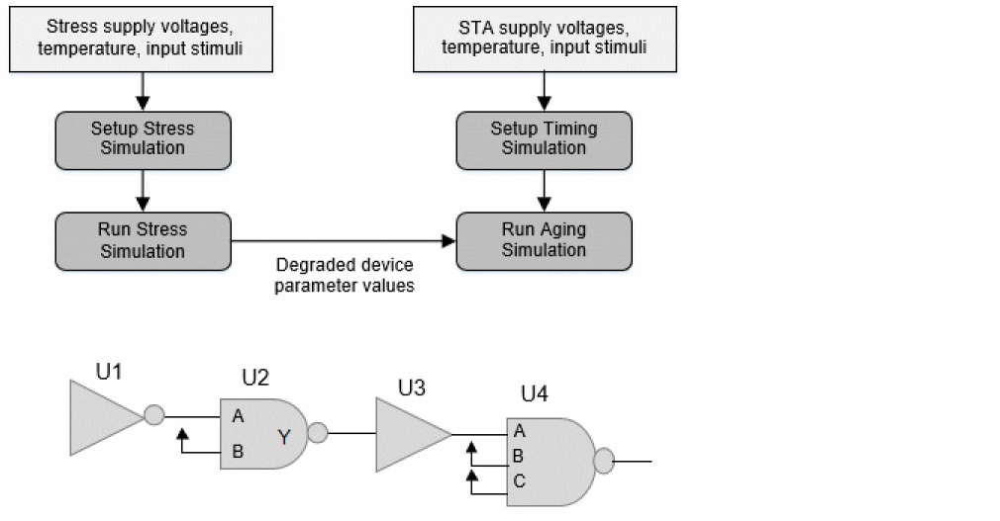
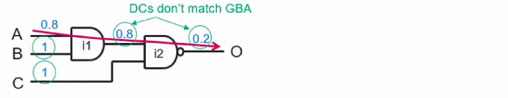
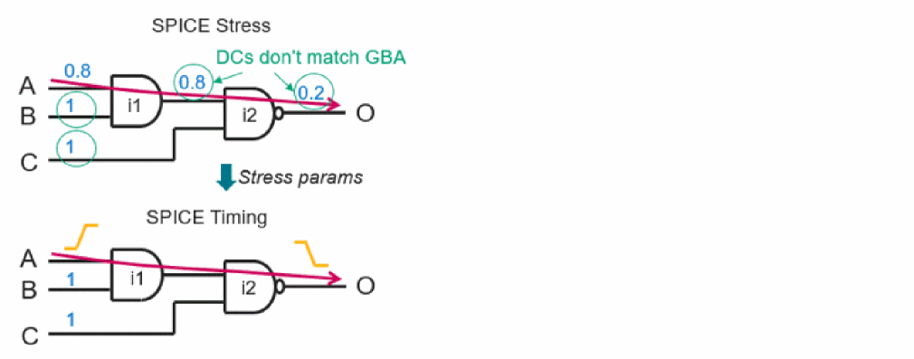
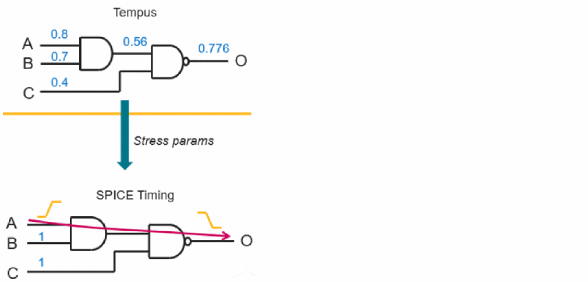

Aging-Aware Tempus vs SPICE Correlation
The Tempus STA vs Spice correlation is performed at the path level. There are two main aspects of aging-aware Spice simulations.
- Stress simulation: Uses Spice simulator's reliability analysis flow to degrade devices. This requires reliability models from foundry (typically a set of text files and binaries).
-
Aging simulation: Uses device degradation information produced by stress simulation to run degraded circuit analysis. The delays and slew measured from this simulation includes aging effects. The delays and slews produced by this may be larger than the delays and slews produced by fresh (i.e., not aged) circuit simulation.
Figure -100 Spice correlation

Spice correlation to Tempus is path-based analysis. The side inputs of instances through which path does not traverse are tied to the constant values. Consider for example, U2/B, U4/B, and U4/C pins in the above circuit. Due to this, the real duty cycles cannot be propagated in Spice. During STA, however, Tempus analysis considers duty cycle propagation from all inputs of multi-input gates and computes duty cycles at the output. A lack of duty cycle propagation in Spice can cause mis correlation with Tempus. This is addressed in a two step Spice correlation approach.
- Stress and timing correlation
-
Timing-only correlation
Figure -101 Stress and Timing correlation

Method 1 (Stress and Timing Correlation)
The side pins in Spice are held at logic constants 0 or 1, so the duty cycle should be fixed for such pins. A fixed duty cycle is used for all the side pins of a cell in a path under test. Toggle rate for side pins is set to 0.
Spice simulation is performed in two iterations. In the first iteration, the stress parameters are computed using the fixed duty cycle at side pins. In the second iteration, those stress parameters are passed on to run aging simulation in order to get the degraded delays and slews.
Therefore, both the stress and aging validation are accomplished using this method. The only validation that is not covered in this method is the stress, which is computed based on the propagated duty cycles and toggle rates. This method uses the fixed duty cycle at every pin to compute the stress.
Figure -102 Method 1 (Stress and Timing correlation)

Method 2 (Timing-Only Correlation)
This method uses realistic duty cycles and toggle rates to be used for side pins. The device stress is computed based on the duty cycles and toggle rates used by the Tempus STA engine. Those device stress parameters are then directly fed to the SPICE deck for aging analysis.
With this approach, only timing validation is possible. Spice simulation is performed in a single iteration.
Figure -103 Method 2 (Timing-only correlation)

Spice correlation method can be selected using the following command:
create_spice_deck -aging_correlation_type {full | timingonly}
where full is method 1 and timingonly is method 2.
While using method 1, the following command is required for forcing fixed duty cycle:
set_aging_analysis_mode -use_fixed_duty_cycle true
Return to top